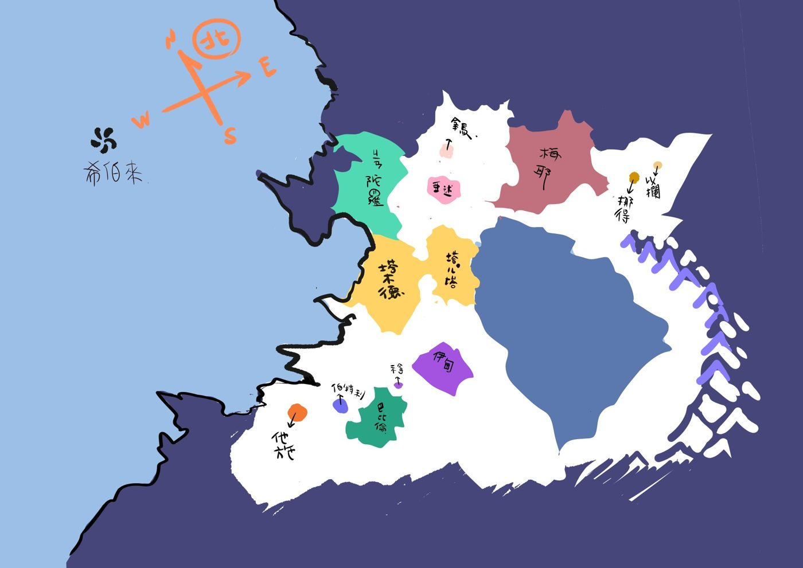

00
先知道這幾個寫法
不少讀者卡住，問題出在文字習慣。先看這裡，後面讀起來會順很多。
每個人都用「他」書裡的第三人稱一律寫「他」，所以莉莉絲、夏娃這些女性角色也寫作「他」。這不代表黎凡特沒有性別意識：女士、夫人這類帶性別的稱謂，後面要加「閣下」才算尊重；少了「閣下」直接叫，就帶有貶低的意思。
「人財」不是錯字人在這個世界被當成企業資產來培養和計算，所以「人才」寫成「人財」。
地表沒有「小時」一般人用「分鐘」和「日間時區」算時間跟距離。只有希伯來保留二十四小時制，所以莉莉絲隨口說「幾點鐘」，亞當會愣住。
拉結、雅各是身分這些是身分稱呼，不是姓氏。書裡會說「希伯來拉結」「這位拉結」，不會說「莉莉絲拉結」。
載具＝交通工具「載具」指各種車輛和移動裝置，「個人裝置」就是隨身的通訊機。
詛咒＝污染一般人說「詛咒」，懂科學的人說「污染」，指的是同一個東西，差別在說話的人知道多少。
01
誰管什麼
黎凡特沒有國家，由三大集團和企業體系治理。看懂下面這張圖，大部分的名詞就有位置可以放了。
02
身分與身體
書裡很多衝突來自「誰有資格」：誰能連上知識網路、誰能生小孩、誰能換身體。
希伯來人的三種身分
一般人財的一生
其一裡莉莉絲這樣描述黎凡特人的人生路線：
- 在企業出生，本質上屬於企業的資產。
- 進入希伯來外派的拉普拉斯，完成通識教育。
- 回到企業，只學自己崗位需要的專業知識。
- 然後止步於此。住哪裡、做什麼、能不能生小孩，都有人替你決定。
工作能換到生活用的錢，卻很難換到「購買權」。缺少購買權的人，很多就把薪水花在虛擬的後設宇宙裡。
生小孩這件事
| 誰能用 | 能做什麼 | 出現 | |
|---|---|---|---|
| 生育艙 | 有「選擇權」的高階人財，需要特殊貢獻才能申請 | 隔絕污染，還能在受精前先做基因整形 | 其一 |
| 孕囊 | 通過伊希切爾審查的一般人財（圖曆776年起） | 只有隔絕污染的基本功能。莉莉絲發明，原本想讓每個人都能生育 | 其一 |
| 子宮懷孕 | 幾乎沒有人 | 在污染下已不是常態。莉莉絲是少見的「自然生育派」 | 其五 |
孕囊推出時被改名成《基因階梯計畫》，還加上評分審查，綜合分數低於九十就永久失去資格。這是莉莉絲對體制失望的起點。
可以替換的身體
| 有沒有大腦 | 用途 | 誰用得起 | 出現 | |
|---|---|---|---|---|
| 仿身體 | 沒有，只有肢體或器官 | 給一般人更換器官、修復身體 | 拉馬蘇提供的醫療名額 | 其七 |
| 分身體 | 沒有，其餘器官完整 | 一具永遠不會醒來的空殼，可以把意識換進去使用 | 企業高層也未必買得起，一個人通常只有一副 | 其七 |
| 義體 | 沒有自己的意識 | 萬軍的士兵：機械骨架裡填入馴化過的錯配活組織，由操作者遠端操控 | 軍方 | 其九 |
03
已知文明地圖
「黎凡特」就是目前已知的人類活動範圍。希伯來不在大陸上，它在西邊海上的尼莫點。

距離怎麼算：日間時區
黎凡特失去了衛星，量不出精確距離，改用「載具一個白天大約跑得到的範圍」當單位。書中註腳說，一個日間時區約等於五百分鐘、六百公里，差不多是一個文明區域的直徑。夜裡移動同一段路會慢很多，叫做「夜間時區」，慢多少沒有定數。
04
時間
年份一律用「圖曆」，也就是三大集團成立後的紀年。故事主要發生在圖曆770到800年代。
正篇：過去
其一到其十，從莉莉絲和亞當相戀、創立亞述，一路寫到巴比倫陷落。
後日談：現在
陷落多年後。莉莉絲已離開人理、成為利亞，正和亞當打離婚官司；夏娃想弄清楚自己在這件事裡的位置。
05
人物
依所屬分組。顏色對應勢力。
06
名詞速查
點開名詞可以看較完整的說明。標籤是這個詞第一次出現的章節。
找不到符合的名詞。換個關鍵字，或把「我讀到」調到更後面的章節試試。
07
勘誤與更新
已出版內容的更正，以及這份導覽的更新紀錄。
上冊勘誤
| 位置 | 原文 | 更正為 |
|---|---|---|
| 其一 開頭 | 我們介入保護拉結才四個小時 | 我們介入保護拉結才兩百多分鐘 |
| 後日談 | 流密色 | 流蜜色 |
| 後日談 | 這個退役軍官眼中逐漸不齒的懷疑 | 這個現役軍官眼中逐漸不齒的懷疑 |
| 後日談 | 比暴怒的退役軍官更甚的力氣 | 比暴怒的現役軍官更甚的力氣 |
| 其六 | 但你怎麼會在伯特利── | 但你怎麼會在挪得── |
更新紀錄
- 2026-11-13 讀者導覽上線，整理至下冊其十。